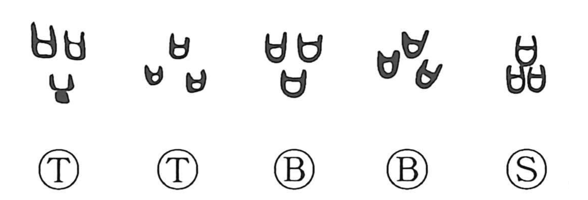

品

Kun: shina | On: hin
goods ・ article ・ variety ・ kind
Explanation
品 groups three 口, ritual vessels containing written prayers or pledges. Bringing several together represents the performance of many prayers. Their repeated forms express multiplicity.
An array can be divided into kinds and ordered by category. 品 therefore develops the senses of type, class, grade, and sorting. A bronze inscription grants servants in three 品: the phrase identifies people from three different groups of origin. Another inscription concerns dividing captives by their group of origin.
The same distinction applies to goods and to people. 品 can name an article, a variety, a person's standing, or a quality of character. The movement is from a plurality set out together to the classes and ranks within it.